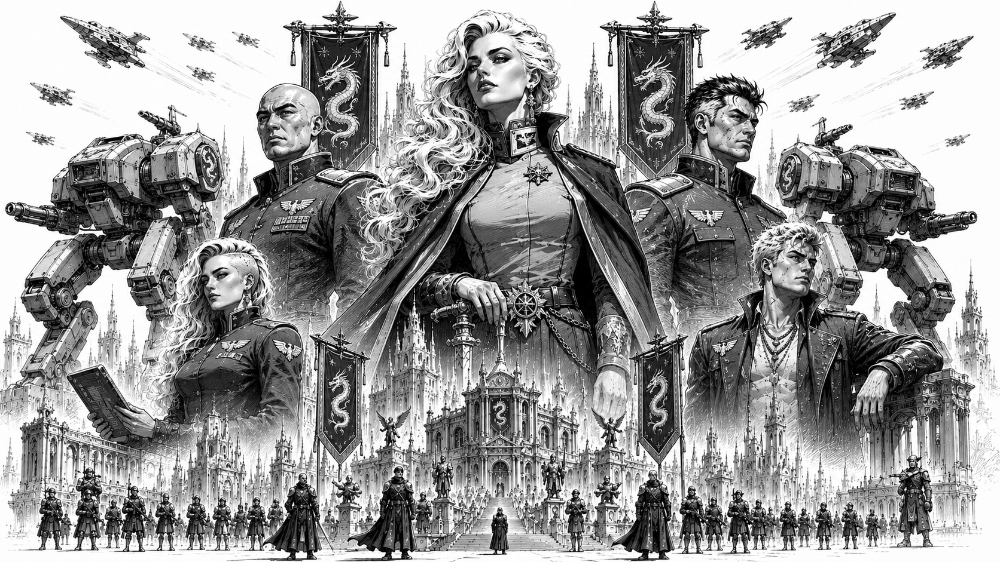

Omnisphere Imperium
“When the stars went dark, the Imperium carries the flame of civilization.”
— Imperial remembrance inscription

State propaganda illustration depicting Imperator Jada Lytherius (center) flanked by her children: Taikario Lytherius (left), Sylara Lytherius (lower left), Valtoria Lytherius (right), and Rythor Lytherius (lower right), standing before the military and cultural power of the Omnisphere Imperium. Towering war machines, dragon banners, and the spires of the Imperial Core rise behind the ruling bloodline of House Lytherius.:material-dragon: Overview
| Government Type | Imperial aristocracy |
| Ruling House | House Lytherius |
| Current Ruler | Imperator Jada Lytherius |
| Capital World | Celestia Prime |
| Population | 10.3 billion |
| Military Strength | 220,000 mechs |
| Friendly Ties | Starcrest Protectorate |
| Hostilities | Orion Corporate; Confederate Vanguard Union |
| Words | “Fierce Beauty.” |
The Omnisphere Imperium, often called the Imperium or the Dragon Riders, is one of the five Great Houses of the Core and the oldest surviving state in known human civilization.
The Imperium is widely recognized as the only surviving power from the age of the ancient Empire. Its roots extend even further back, to the centuries before the Empire united the Core, when the region that would become the Imperium was divided among smaller states known for metallurgy, engineering, and fierce competition over rare minerals and energy sources.
In the modern Core, the Imperium is known for honor, duty, artistic excellence, military discipline, and a cultural philosophy that joins beauty with strength. Its words, “Fierce Beauty,” reflect this union of refinement and martial power.
The Imperium also maintains a deep symbolic association with fire. Fire represents civilization, continuity, memory, life, and the will to endure. Imperial tradition often describes House Lytherius and the Imperium as the keepers of the flame that survived the Collapse and carried civilization through the dark age.
History and Origins
The history of the Imperium begins centuries before the rise of the ancient Empire.
Before its formation, the region that would become the Imperial heartland was fragmented among multiple smaller powers. These states possessed distinct cultural practices, but many shared a focus on metallurgy, engineering, and resource extraction. Frequent conflicts over rare minerals and energy sources shaped the early military and industrial traditions of the region.
The rise of House Lytherius is traditionally tied to Vyrexia Lyther, a brilliant and ambitious leader remembered as both a skilled warrior and a tactical visionary.
The defining moment in early Imperial history was the development of the first war mech. This breakthrough granted House Lytherius a sudden and overwhelming battlefield advantage, allowing rapid expansion across surrounding territories and laying the foundation for the Omnisphere Imperium.
The Imperium’s early conquests funded both military and artistic growth. Wealth from conquered territories supported the industrial base necessary to maintain mech armies, while also patronizing artists, poets, engineers, philosophers, and scholars.
This fusion of martial supremacy and artistic achievement became one of the defining features of House Lytherius culture.
The Old Empire and the Collapse
At its height, the early Imperium commanded vast territories and possessed unmatched technological superiority through its mech armies.
Over time, however, the scale of its territory became a vulnerability. Internal rebellions, political betrayal, economic strain, and external pressures weakened Imperial dominance.
Eventually, the broader ancient Empire emerged, and the reduced but still powerful Omnisphere Imperium became a member state within that larger order.
During the Collapse and the dark age that followed, the Imperium endured where nearly every other major power fell.
Imperial records claim the Imperium resisted the forces associated with the Ophidian Supremacy and preserved its core territories through fortified defense, discipline, and strict internal cohesion.
Although the Imperium lost worlds during the era, its government, ruling house, and central culture survived intact.
This continuity remains central to Imperial identity.
Darker History
The modern Imperium often emphasizes honor, art, beauty, and stability, but StarCom historical records also preserve accounts of a harsher early Imperial past.
Early Imperial expansion was frequently brutal.
Defeated forces were often given grim ultimatums: swear loyalty or face execution. In several accounts, defiant captives were annihilated immediately using mech weaponry as a demonstration of Imperial power.
The early Imperium also relied upon slave labor to accelerate industrialization across conquered worlds. Dissenters, rebels, and military prisoners were often publicly executed to suppress resistance.
Whole populations were relocated into strategic settlements, local cultures were disrupted, and Imperial dominance was displayed through grand military parades featuring war trophies and captives.
Blood sports involving prisoners also formed part of early Imperial spectacle, serving both as entertainment and as a reminder of state power.
The modern Imperium has formally abandoned the most brutal of these practices. However, this darker history is often softened, romanticized, or minimized within later Imperial accounts.
Celestia Prime
The capital of the Omnisphere Imperium is Celestia Prime, known throughout the Core as the “Jewel of the Imperium.”
Celestia Prime is a world of striking natural and architectural beauty, marked by: - towering mountains - sprawling forests - vast oceans - advanced military facilities - traditionally inspired art and architecture - major centers of Imperial culture
The planet’s economy thrives on both advanced technology and artistic production.
Celestia Prime embodies the Imperial ideal of “Fierce Beauty”: a world where refinement, military power, natural grandeur, and historical continuity exist side by side.
Ruler and Leadership
The Imperium is ruled by House Lytherius from Celestia Prime.
Its current ruler is Imperator Jada Lytherius, widely regarded as wise, stoic, careful, and politically measured.
Under Jada’s leadership, the Imperium favors calculated action over impulsive escalation. It is slow to react when provoked, but always prepared to defend itself with formidable force when necessary.
House Lytherius traditionally favors consorts over marriage in order to preserve the ruling family lineage. Jada Lytherius has four children with at least two separate regional leaders from within the Imperium.
In Lytherian tradition, children of the ruling line are regarded as belonging to the Imperium itself. Their primary familial bond is therefore with the Imperator and the state, rather than with their fathers.
Jada’s children are: - Takarion Lytherius - Valtorian Lytherius - Sylara Lytherius - Rythor Lytherius
Takarion and Valtorian, the two eldest sons, are respected military tacticians and serve among the Imperium’s top commanders.
Sylara Lytherius is known as a diplomatic prodigy. Her preference for peaceful solutions sometimes places her at odds with more martial members of her family.
Rythor, the youngest, is drawn more directly to combat and continues to refine his skills as a mech pilot.
Society and Culture
Imperial culture places great value on: - honor - duty - artistic excellence - discipline - beauty - martial skill - historical continuity
Many Imperial citizens are trained in artistic pursuits as well as practical or military disciplines.
The Imperium’s ideal citizen is not merely a warrior, scholar, engineer, or artist, but someone who brings perfection to whatever role they occupy.
This emphasis on perfection in all endeavors is one of the central features of Imperial culture.
The Eternal Flame
Fire occupies a central spiritual and cultural role within the Imperium.
Imperial philosophy associates flame with: - civilization - continuity - knowledge - sacrifice - memory - human survival
Many Imperial ceremonies involve: - great braziers - torch processions - eternal flames - ceremonial burning rites - fire-lit military vigils
This symbolism is closely tied to the Imperium’s belief that it preserved the last surviving flame of civilization during the dark age while much of the Core descended into ruin.
The dragon imagery commonly associated with the Imperium derives partly from this philosophy. Dragons represent both destructive power and the guarded fire of civilization itself.
Politics and Diplomacy
The Imperium employs a deliberate and cautious political approach.
Its leaders prefer measured responses to threats and challenges rather than hasty escalation. When provoked, however, the Imperium responds with calculated resolve and formidable force.
The Imperium maintains friendly ties with the Starcrest Protectorate, as both powers share cultural foundations rooted in honor and duty.
Relations with the Orion Corporate and the Confederate Vanguard Union are strained.
Orion Corporate often views the Imperium as traditional and outdated, too bound to ritual and inherited customs.
The Union views the Imperium as a serious military contender, particularly because Imperial military strength challenges the Union’s claim to military supremacy.
Relations with the Helios Sovereignty are generally reasonable, largely because geography limits direct conflict between them rather than because of deep cultural similarity.
Military and Technology
Imperium mechs possess a distinctive non-humanoid, serpentine style. This design tradition contributes to the Imperium’s popular nickname: “the Dragon Riders.”
Imperial battlefield doctrine emphasizes: - agility - speed - hit-and-run attacks - precision ambushes - heat damage - overwhelming opening volleys
Although many Imperium mechs are lightly armored, they are extremely fast within their weight classes.
Their signature technology is the advanced arcanite engine, which grants above-average speed and mobility.
This mobility allows Imperial forces to strike quickly, disengage, and re-engage on favorable terms.
Blasters and Heat Warfare
One of the Imperium’s most distinctive weapon systems is the Blaster, a burst-damage laser weapon.
Blasters accumulate and store multiple charges, then discharge them simultaneously during an attack. This allows a single opening volley to strike with two or three times the force of a conventional laser burst.
Blasters are useful in prolonged battles, but they are especially dangerous during the first moments of an engagement, when Imperial forces can unleash concentrated fire and then withdraw to recharge.
Imperium mechs also frequently use: - High Energy Cannons - Torchers - heat-focused weapon systems
These weapons force opponents to manage overheating, internal damage, and mobility constraints.
The Imperium exploits these weaknesses through superior speed, precise ambushes, and controlled disengagement.
Mercenary Relations
Mercenaries often find the Imperium difficult to work for at first.
The Imperium does not believe in rewards without trust. New mercenary companies may struggle financially while attempting to prove their reliability and earn Imperial confidence.
However, those who gain the trust and respect of the Imperium often find it to be one of the most generous employers in the Core.
As a result, mercenaries who successfully establish themselves with the Imperium are often fiercely loyal to its cause.
Public Reputation
Throughout the Core, the Omnisphere Imperium is viewed as: - ancient - honorable - beautiful - disciplined - aristocratic - militarily formidable - culturally refined
Its admirers view it as a living remnant of humanity’s lost greatness.
Its critics see it as proud, rigid, and overly attached to mythologized traditions.
Even among critics, however, the Imperium’s survival through the dark age and its role in the development of war mechs grant it a historical stature few powers can rival.
Modern Outlook
The Omnisphere Imperium remains one of the most stable and respected powers in the Core.
It is no longer the dominant civilization it once was, yet it has endured longer than any other known state.
As tensions rise between the Great Houses, the Imperium continues to present itself as the keeper of civilization’s flame: ancient, disciplined, beautiful, and prepared to defend what remains of the Core.